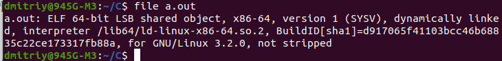
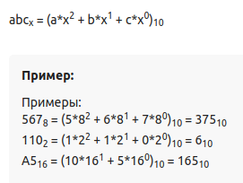
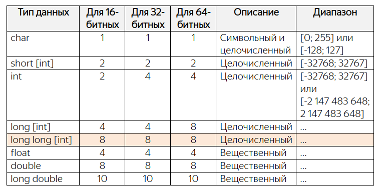
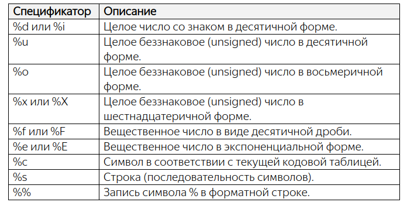
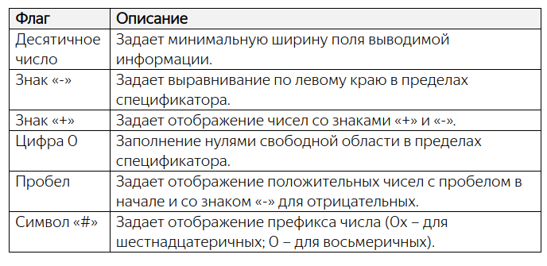
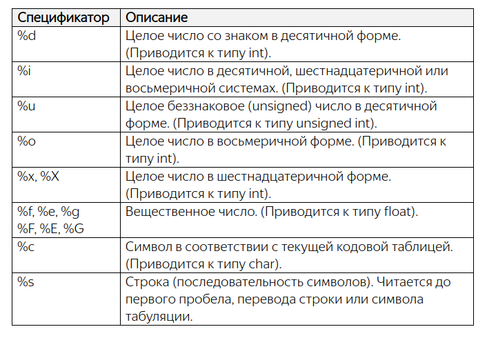
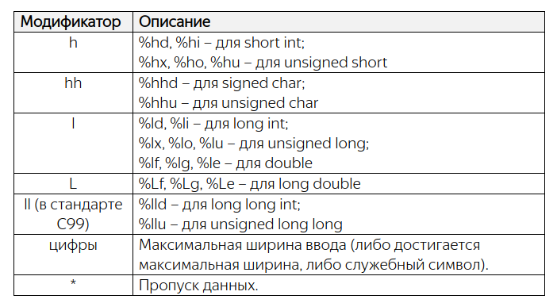
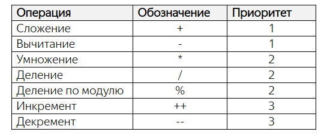
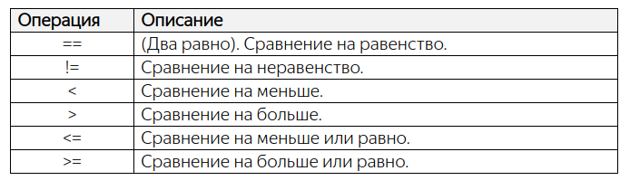

Язык программирования Си
Учебники: Руководство по языку программирования Си
Для изучения C++ рекомендуют сначала освоить Cи.
Как я понял, наиболее близким к языку на машинном коде является Ассемблер, далее более понятным человеку является язык С и
самым понятным удобным является С++.
Как работать на Cи
Язык C является компилируемым. Это означает, что выполнения программы должен быть создан эксешник этой программы. Сама программа, написанная на C имеет расширение .c
Компилятором для С является программа gcc.
В ubuntu, он автоматически установлен. В Windows его нужно скачивать и устанавливать.
Для скриптов на С создал в домашней папке папку С.
Мой первый скрипт example.c (написан в VSCode):
#include <stdio.h>
int main(void)
{
printf("Hello, world\n");
return 0;
}
|
dmitriy@945G-M3:~/C$ gcc example.cБыл в той же папке создан файл a.out
В терминале выполнял команды: a.out и a.exe.
Команда не найдена
О GCC, компиляции и библиотеках часть 1
Компилятор GCC по умолчанию для unix-систем выдаёт файл с именем a.out, если не используется опция -o.
Любопытно, компиляторы одни из немногих приложений UNIX для которых не безразлично расширение файлов. По расширению GCC определяет что за файл перед ним и, что с ним нужно (можно) сделать. Файлы исходного кода на языке C должны иметь расширение .c, на языке C++, как вариант, .cpp, заголовочные файлы на языке C .h, объектные файлы .o и так далее. Если использовать неправильное расширение, gcc будет работать не корректно (если вообще согласиться, что-либо делать).

Утилита file выводит информацию о типе (с точки зрения системы) переданного в коммандной строке файла, для некоторых типов файлов выводит всякие дополнительные сведения касающиеся содержимого файла.
Выполнил:
dmitriy@945G-M3:~/C$ ./a.out Hello, worldНужно было после точки указать '/'
============================================================================================================================
Предпроцессор и компилятор
Процесс компиляции с помощью gcc
Процесс компиляции можно разбить на 4 основных этапа:- обработка препроцессором
Препроцессор осуществляет подготовку исходного файла к компиляции - вырезает комментарии, добавляет содержимое заголовочных файлов (директива препроцессора #include), реализует раскрытие макросов (символических констант, директива препроцессора #define). Затем чистый код, без макросов и директив подается на компилятор, который знать не знает ни о каких макросах и директивах... - собственно компиляция
Компилятор превращает текст программы в машинный код - закодированные в виде битов команды и данные. - ассемблирование
- линковка (связывание)
Опции gcc позволяют прервать процесс на любом из этих этапов.
==========================================================================================================================
Структура программ на языке Cи
КомментарийМногострочные комментарии в С заключаются в
/* это комментарий */Открывается слэшем и закрывается слэшем.
Однострочный комментарий пишется после двойного слэша: // комментарий
Обычно однострочный комментарий пишется после команды, чтобы объяснить что эта команда делает.
Директивы предпроцессора
#include <stdio.h>
Все директивы начинаются с символа: #
include - это имя директивы
<stdio.h> - это имя библиотеки, нужная для выполнения команды printf()
stdio от standart input output
расширение .h означает header (заголовок)
Функции
Первая функция в С всегда называется main
int main(void)
{
}
Ключевое слово int означает, что функция main возвращает целые числа.
В скобках находятся параметры функции. Слово void означает отсутствие параметров.
В фигурных скобках находится тело функции.
========================================================================================================================
Системы счисления чисел
Перевод в десятичную систему счисления
Преобразовать число из любой системы счисления в десятичную можно следующим образом: каждый разряд числа необходимо умножить на Xn, где X - основание исходного числа, n - номер разряда. Затем суммировать полученные значения.
Представление отрицательных целых чисел в двоичной системе
Хорошо, мы с вами только что увидели, как можно кодировать целые положительные числа в восьми битах. А что если нам необходимо представлять и положительные и отрицательные значения? Как это можно было бы сделать? На самом деле подход очень простой и вытекает из только что установленного факта: если из нуля вычесть один, то получим 255. Но ничто нам не мешает вместо 255 кодировать значение -1:0 – 1 = -1
Соответственно, если крайнюю правую шестеренку провернуть назад еще один раз, то получим уже значение -2:Поворачивая еще раз назад, будем получать следующие отрицательные числа -3, -4 и так далее:
1 1 1 1 1 1 1 1 = -1 1 1 1 1 1 1 1 0 = -2 1 1 1 1 1 1 0 1 = -3 1 1 1 1 1 1 0 0 = -4 …Спрашивается, на каком наименьшем отрицательном следует остановиться? В практике программирования поступают следующим образом. Самый старший бит числа (в данном случае 8-й бит) отводят под знак. Если он равен 1 – число отрицательное, если 0 – число положительное. Следовательно, по нашей схеме формирования отрицательных чисел мы дойдем до:
1 0 0 0 0 0 0 0 = -128
Соответственно, максимальное положительное число равно:
0 1 1 1 1 1 1 1 = 127
Отсюда получаем диапазон для представления отрицательных и положительных чисел в одном байте от -128 до 127.
Конечно, это совсем небольшой диапазон значений и для большинства практических задач его недостаточно. Как быть? Опять же все просто. Можно под хранение целых чисел отвести не один, а два подряд идущих байта:
Тогда диапазон в целых числах составит от 0 до 65535, а для чисел со знаком [-32768; 32767]
Переполнение
При попытке записать число 256 в один байт, мы получим переполнение и, как результат, значение 0. И, наоборот, если из нуля
вычесть один, то получим значение 255:
0 – 1 = 255
Все эти эффекты переполнения следует учитывать, при работе с целыми числами.
Шестнадцатеричная система счисления
Первое, что нам понадобится – это 16 различных цифр. Первые десять логично взять из уже знакомой нам десятичной системы, а
именно в виде следующих арабских обозначений:
0 1 2 3 4 5 6 7 8 9
Не хватает еще шести. Недолго думая, решили в их качестве воспользоваться первыми шестью буквами латинского алфавита:
A, B, C, D, E, F
В результате, цифра A обозначает число 10, B – число 11 и так далее до F – число 15. С помощью этих шестнадцати цифр мы имеем возможность описать любую комбинацию из четырех бит:
0 0 0 0 = 0 0 1 0 0 = 4 1 0 0 0 = 8 1 1 0 0 = C 0 0 0 1 = 1 0 1 0 1 = 5 1 0 0 1 = 9 1 1 0 1 = D 0 0 1 0 = 2 0 1 1 0 = 6 1 0 1 0 = A 1 1 1 0 = E 0 0 1 1 = 3 0 1 1 1 = 7 1 0 1 1 = B 1 1 1 1 = FОпытные программисты эту таблицу знают наизусть. Поэтому, когда они видят какое-либо шестнадцатеричное число, например, 1A, то сразу понимают его двоичное представление на уровне байта:
1A = 00011010
Видите, как это просто и удобно. Мы легко можем переходить из двоичной записи в шестнадцатеричную:
10110001 = B1
И, наоборот, из шестнадцатеричной в двоичную. Именно в этом главное достоинство шестнадцатеричной формы записи для представления данных в вычислительной технике.
Конечно, при необходимости, любое шестнадцатеричное число можно перевести в десятичный вид. Делается это очень просто. Пусть дано некоторое значение, например:
5FC
Представим его вначале как сумму степеней 16-ти:
5FC = 5 * 16 ** 0 + F * 16 ** 1 + C * 16 ** 0
А, затем, вместо F подставим эквивалент из десятичной системы 15, а вместо C – значение 12, получим в итоге искомое число 1532
Для того, чтобы преобразовать число из десятичной системы счисления в шестнадцатеричную,
необходимо выполнить следующие действия.
1. Делим десятичное число на 16 и записываем остаток от деления.
2. Результат деления вновь делим на 16 и опять записываем остаток.
3. Повторяем операцию до тех пор пока результат деления не будет равен нулю.
4. Запишем полученные остатки в обратном порядке и получим искомое число.
Переведем число 100010 в шестнадцатеричную систему:
1000 / 16 = 62 (остаток 8)
62 / 16 = 3 (остаток 14, в шестнадцатеричной системе – E)
3 / 16 = 0 (остаток 3)
Записываем остатки в обратном порядке, получаем результат: 3E8 (в 16 - системе)
======================================================================================================================
Переменные и их базовые типы. Модификаторы unsigned и signed
Для объявления переменной в языке Си сначала указывается тип данных для переменной, а затем, ее имя. На уровне синтаксиса это выглядит следующим образом:<тип переменной> <имя переменной>;Имя переменной – это, по сути, название хранилища (ячейки памяти в 1 байт), где расположено некоторое целое число.
максимальная длина имени переменной внутри модуля, учитываемое компилятором, составляет 63 символа
максимальная длина имени внешней переменной (за пределами модуля), учитываемое компилятором, составляет 31 символ
Типы переменных

Здесь под переменную типа char выделяется одна ячейка памяти 8 бит.
int - переменная для целых чисел. Память под нее выделяется 4 ячейки в 32 и 64 - разрядных системах.
double - переменная под вещественные числа.
Переменная типа char может быть безнаковым числом от 0 до 255 или знаковым от -128 до 127.
Чтобы определить тип числа для char существуют два модификатора:
unsigned – беззнаковый;
signed – знаковый (появился в стандарте ANSI C90).
Если при объявлении явно указать:
unsigned char fl_view;
то переменная fl_view будет описывать целые числа в интервале [0; 255]. Если же указать:
signed char fl_view;
то переменная fl_view будет описывать целые числа со знаком в интервале [-128; 127].
Все остальные целочисленные типы (short, int, long, long long) по умолчанию всегда идут как знаковые.
Вещественные типы float и double всегда знаковые и применять к ним эти модификаторы нельзя.
Рекомендации по выбору типов для переменных
Если нам требуется хранить отдельные символы или работать с отдельными ячейками памяти, то для этого существует только один тип char.Если предполагается оперировать целочисленными значениями, то изначально следует подумать о типе int. Этот тип нам может не подойти в двух ситуациях:
если мы создаем в программе большое число целочисленных переменных (от 1000 и более), то следует посмотреть в сторону типа short в целях экономии памяти. Конечно, тип short можно использовать, только если его диапазона значений достаточно для представления данных в рамках решаемой задачи. Иначе, придется опять же обратиться к типу int, или даже типу long.
Типы long или long long (если его поддерживает компилятор) следует использовать только в случае, если диапазон значений int недостаточно.
Наконец, для описания вещественных чисел (чисел с плавающей точкой), следует изначально рассматривать тип double. И обращаться
к типу float только если в программе предполагается создавать много вещественных чисел (от 1000 и более).
Тип long double практически не используется за редким исключением сложных математических вычислений.
----------------------------------------------------------------------------------------------------------------------------
Операция присваивания. Числовые и символьные литералы. Операция sizeof
В языке СИ можно выполнять операции присваивания так:int var, size; size = var = 100;Конечно, эту же программу мы могли бы записать и так: int var, size; var = 100; size = 100; Современные компиляторы в обоих случаях сформируют оптимальный машинный код и корректно переведут эту программу в наборы машинных инструкций. Поэтому, какой вариант присваивания использовать решает сам программист, исходя из удобства оформления программы.
Сразу же отмечу еще один важный момент, связанный с объявлением переменных. Правило хорошего тона предполагает, что все значимые переменные следует объявлять вначале каждого блока операторов (то есть, фигурных скобок). А уже затем, выполнять операции с ними. Именно так сделано в нашей программе: сначала идет объявление двух переменных, а ниже описаны действия с ними. Благодаря этому упрощается понимание и редактирование программ. При необходимости, каждую переменную можно сопроводить поясняющим комментарием. Конечно, это относится только к значимым переменным. Любые другие, временные, можно объявлять в любом месте программы, чтобы визуально она не засорялась лишними деталями.
Инициализация переменных
В языке Си, равно как и во многих других языках высокого уровня, можно определять значение переменной сразу в момент ее объявления. Например, так:int total = 1024;
Визуально это выглядит как обычное присваивание переменной значения. Но в действительности – это совершенно другая операция, которая называется инициализацией переменной. То есть, когда мы объявляем какую-либо переменную (любого типа) и сразу указываем для нее некоторые начальные данные, то в этот момент запускается механизм инициализации этой переменной. Компилятор четко различает эти две ситуации: инициализация и обычное присваивание. На уровне машинных кодов они также могут быть реализованы по разному. Да и синтаксически, как мы в будущем увидим, при инициализации возможные конструкции, которые нельзя использовать при присваивании. А пока на данном этапе достаточно знать и запомнить, что есть процесс инициализации переменных, а есть присваивание данных и, в общем случае, это разные вещи. Для полноты картины приведу еще один пример, когда мы комбинируем обычное объявление и инициализацию переменных:
int total = 1024, buffer;
Целочисленные и символьные литералы
В программировании явно прописанные числовые значения называются числовыми литералами и представляется как целочисленная константа типа int. Почему именно типом int? Так решил создатель языка Си Деннис Ритчи: все целочисленные константы, записанные в программе в десятичном виде, хранить на уровне типа int. Но только в том случае, если число умещается в диапазон этого типа.Напомню, что в современных 32- и 64-битных компьютерах тип int, как правило, составляет 4 байта (32 бита) и описывает диапазон значений:
[-2 147 483 648; 2 147 483 647]
Если целочисленный литерал положителен и не умещается в этот диапазон, то компилятор подбирает соответствующий размер типов данных в порядке возрастания:
int --> unsigned int --> long --> unsigned long --> long long --> unsigned long longЕсли же и самого большого недостаточно (что сложно себе представить в реальных задачах), то компилятор выдаст ошибку.
Язык Си позволяет определять в программе числовые литералы еще в шестнадцатеричной и восьмеричной форме. Делается это очень просто, например:
int dec, hex, oct; dec = 100; hex = 0x1FA; oct = 0123;Здесь 100 – это десятичная форма записи; 0x1FA – шестнадцатеричная (число 1FA); 0123 – восьмеричная. То есть, для записи шестнадцатеричных чисел перед ними ставится префикс в виде символов «0x», а для записи восьмеричных – префикс в виде нуля. Так можно прописывать любые числа в нужном нам формате. Разумеется, на уровне машинных кодов они представляются единым образом в виде набора бит и запись числовых литералов в той или иной форме служит исключительно для удобства восприятия программистом. Не более того.
Но с шестнадцатеричными и восьмеричными литералами есть один важный нюанс. Их компилятор изначально представляет не типом int, как десятичные, а типом unsigned int. Соответственно, если литерал не умещается в этот тип, то берутся другие больших размеров в порядке:
unsigned int, unsigned long, unsigned long longПри желании мы можем явно указать компилятору тип числового литерала. Для этого используются следующие суффиксы:
- U или u – использование модификатора unsigned в определении литерала;
- L или l – использование типа long при определении литерала;
- LL или ll – использование типа long long при определении литерала.
int dec_i, dec_ui, dec_l, dec_ul; dec_i = 100; // тип литерала int dec_ui = 100U; // тип литерала unsigned int dec_l = 100L; // тип литерала long dec_ul = 100UL; // тип литерала unsigned longТип char
Тип char формально определен и как символьный и как целочисленный. Первый вопрос, как такое может быть? На самом деле все очень просто. Объявим переменную этого типа, например:
char ch;
а, затем, присвоим ей какой-либо символ, например, буквы d:
ch = 'd';
Обратите внимание, как прописан символ в тексте программы: он заключен в одинарные кавычки (их еще называют апострофами). И
только так можно определять символьные литералы в языке Си. Когда компилятор видит одинарные кавычки, то он воспринимает
информацию в них, как символ. Никакие другие кавычки для этого использовать нельзя. Например, двойные зарезервированы для
определения строк, поэтому запись:
ch = "d";
приведет к ошибке на этапе компиляции. Если же совсем убрать кавычки, то символ d в программе будет восприниматься как
переменная:
ch = d;
Поэтому следует запомнить, что для определения символьного литерала используются только одинарные кавычки.
Вещественные литералы
Помимо целочисленных в программе можно прописывать и вещественные литералы. Определять их можно следующими способами:double d1, d2, d3, d4; d1 = 10.0; d2 = -7.; d3 = 1e2; d4 = 5e-3;Все вещественные литералы компилятор языка Си по умолчанию имеют тип double. Соответственно, математические операции с числами 10.0 и -7.0 будут выполняться несколько иначе, чем с аналогичными целыми числами. Это следует иметь в виду.
Последние два варианта – запись числа в экспоненциальной форме:
<число>e<степень десятки>
Такую форму удобно использовать в научных расчетах, когда используются или очень маленькие или очень большие числа. В любом случае экспоненциальная форма переводится в вещественное число типа double, даже если оно математически является целым, а не дробным.
Перед e всегда должно стоять число
При желании мы можем явно указать компилятору переводить вещественный литерал в тип float. Для этого после числа следует прописать суффикс f, например, так:
d1 = 10.0f;
В такой записи вещественное число 10.0 будет представляться типом float, а не double. Это бывает полезно, когда используется
переменная типа float и ей правильно было бы присвоить значение того же типа:
float var_f;
var_f = 10.0f;
Тогда компилятор не выдаст предупреждение (warning) о возможной потере данных в момент присваивания значения переменной var_f.
Операция sizeof
Операция sizeof возвращает число байт, занимаемых в памяти переменной или, отведенных под тип данных. Синтаксис этой операции следующий:sizeof(<тип | имя переменной>); sizeof <имя переменной>;Обратите внимание, во втором случае мы можем записать ключевое слово sizeof без круглых скобок, но тогда эта операция применяется только к переменным, но не к типам. Чтобы не запоминать эти тонкости, обычно sizeof записывают с круглыми скобками и указывают либо тип данных, либо имя переменных. Например:
int size_float = sizeof(float); int size_var_f = sizeof(var_f);На выходе получаем число байт, которое занимает тип float и переменная var_f. Соответственно:
int size_ch = sizeof(char);
всегда равно единице.
Заключение
Итак, на этом занятии вы должны хорошо понимать, как работает операция присваивания и инициализация переменных в языке Си.
Знать, как записываются и представляются на уровне машинных кодов числовые и символьные литералы, а также какие суффиксы у них
можно пописывать. И, конечно же, уметь применять операцию sizeof для определения размера типа данных или переменной.
==============================================================================================================================
Стандартные потоки ввода/вывода. Функции putchar() и getchar()
На уровне операционной системы, как правило, имеются три стандартных потока ввода/вывода:- stdout – поток вывода информации (как правило, на монитор);
- stderr – поток вывода ошибок (как правило, на монитор);
- stdin – поток ввода информации (как правило, с клавиатуры).
На программном уровне все эти потоки организованы в виде буферов приема или передачи информации. То есть, данные сначала поступают в буфер, а затем, уже либо на устройство вывода, либо в переменные программы. Это очень важный момент. Данные поступают в программу, например, с клавиатуры, не напрямую, а через буфер ввода. То же самое с выводом. Сначала данные из программы попадаю в буфер вывода и только потом, например, отображаются на мониторе или записываются в файл. Запомним этот момент. Он нам в будущем пригодится.
Функции для работы со стандартными потоками
Язык Си предоставляет набор библиотечных функций для работы со стандартными потоками ввода/вывода. Мы рассмотрим некоторые из них, которые наиболее часто используются на практике:- putchar() – вывод символа через поток stdout;
- printf() – форматный вывод строки через поток stdout;
- perror() – вывод ошибок в виде строки через поток stderr;
- getchar() – чтение одного байта (символа) из потока stdin;
- scanf() – форматный ввод данных из потока stdin.
#include <stdio.h>
int getchar(void);
Целочисленный тип int перед функцией означает, что она возвращает целое число, а void в круглых скобках говорит об отсутствии
каких-либо параметров. Поэтому мы можем вызвать ее в программе следующим образом:
Я напомню, что функция getchar() предназначена для чтения одного байта из входного потока stdin. И здесь возникает вопрос,
почему эта функция возвращает целое число типа int, а не данные типа char, который и описывает один байт памяти? Дело в том,
что стандартный поток ввода работает несколько более сложным образом, нежели просто выдача очередного байта из буфера. В
частности, он дополнительно генерирует некоторые служебные значения. Например, значение: EOF (End of File – конец файла)
которое определено как -1 в заголовочном файле stdio.h. То есть, помимо байтового диапазона [0; 255] целых чисел функция
getchar() дополнительно может вернуть значения вне этого диапазона, в частности, -1.
Вам может показаться странным, что мы говорим про константу EOF, когда речь идет о вводе данных с клавиатуры? Но, во-первых,
стандартный поток ввода stdin вполне можно связать с файлом и тогда данные будут читаться из него, а не с клавиатуры и при
достижении конца файла будет сгенерировано значение EOF. И, во-вторых, при вводе с клавиатуры мы также можем симитировать
достижение конца файла путем ввода специального символа комбинацией клавиш Ctrl+Z для ОС Windows и Ctrl+D для ОС Linux.
Таким образом, функции getchar() нужно возвращать целые значения, превышающий байтовый диапазон [0; 255]. Поэтому разработчик
языка Си решил использовать тип int.
int putchar(int ch);
Она также возвращает целое число типа int и в качестве аргумента принимает целое значение этого же типа int. В
действительности, тип int здесь использован для сопряжения (по типам данных) с функцией getchar(). Иначе бы можно было
прописать тип char, так как функция putchar() в качестве аргумента принимает код символа в диапазоне [0;255]. Любое другое
значение за пределами этого диапазона просто будет приводиться к восьми битам и затем помещаться в выходной поток stdout.
Возвращает эта функция код символа, переданного в выходной поток:
Давайте я это покажу на конкретном примере. Запишем два подряд идущих вызова функции getchar() следующим образом:
Вот наглядный эффект работы входного буфера. Мало того, если бы мы ввели не два, а, скажем, три символа, то после чтения первых
двух, последний так бы и остался во входном буфере до момента завершения программы. При завершении, все буферы автоматически
очищаются.
В самом простом варианте мы с вами использовали эту функцию для вывода строки на экран:

Примеры:
int var_i = 1208;
printf("value = %x\n", var_i); - вывод переменной var_i в шестнадцатеричной форме.
printf("value = %f\n", var_i);
Но, если изменить тип переменной var_i на вещественный:
double var_i = 1208;
value = 1208.000000
printf("value = %d\n", -12345678901234LL);
L – суффикс для типа long double.
value = 0.500000
Но, при использовании спецификатора без суффикса L, вывод окажется некорректным:
printf("value = %f\n", var_ld);
value = -0.000000
Так с помощью суффиксов учитываются все базовые типы переменных языка Си.
printf("var_h = %d, var_i = %d, %Lf\n", var_h, var_i, var_ld);

Чтобы воспользоваться функцией scanf() нужно знать, как правильно задавать формат считываемых данных. Для этого, также как и в
функции printf(), предусмотрены спецификаторы преобразований. Но они несколько иные.

Самый простой вариант использования функции scanf() соответствует чтению отдельных символов из входного потока. Для этого,
очевидно, следует использовать спецификатор «%c» следующим образом:
Если данные были успешно прочитаны и занесены в переменную byte, то функция scanf() возвратит значение 1. Это говорит нам, что
в одну переменную были успешно занесены данные из потока stdin.
Давайте для примера запишем два подряд вызова функции scanf() следующим образом:
byte1 = c, byte2 = d
То есть, здесь всегда следует помнить о входном буфере и если в нем имеется какая-либо информация, то последующий вызов функции
scanf() будет читать эти данные, не ожидая ввода с клавиатуры новых данных.
Конечно, эти два вызова можно объединить в один, например, так:
res = 2: byte1 = c, byte2 = d
Обратите внимание, переменная res принимает значение 2, т.к. данные были успешно записаны в две переменные byte1 и byte2. Перед
каждой переменной базового типа не забываем прописывать оператор амперсанд.
Пока, я думаю, все понятно. Давайте теперь поставим символ пробела между спецификаторами в форматной строке:
int res = scanf("%c %c", &byte1, &byte2);
Этот пробел означает любые пробельные символы, которые могут присутствовать между двумя порциями данных. Сразу отмечу, что к
пробельным относят символы: пробела, перевода строки, табуляции (и реже некоторые другие). Кроме того, этот символ может и
вовсе отсутствовать. Например, мы можем ввести с клавиатуры два символа следующими способами:
А теперь давайте вместо пробела поставим, например, запятую:
int res = scanf("%c,%c", &byte1, &byte2);
При таком формате ввода будет ожидаться первый символ (любой), затем обязательно должна идти запятая, а затем еще один любой
символ. Например, так:
c,d
А вот если входные данные не соответствуют формату, например:
cd
то функция scanf() успешно прочитает только первый символ, а следующий (второй) оставит во входном потоке, т.к. вместо запятой
записана буква d. Переменная res в этом случае будет равна уже 1, а в переменной byte2 останется прежнее значение.
Конечно, мы можем комбинировать разные символы разделители в форматной строке, например, так:
int res = scanf("%c, %c", &byte1, &byte2);
Тогда будет читаться первый символ, затем должна идти запятая, возможные пробельные символы, а затем, следующий непробельный
символ. То есть, теперь возможны такие варианты ввода данных:
Как выполняется чтение числовой информации из входного потока.
Если данные представлены в виде целых десятичных чисел со знаком, то для этого часто используют спецификатор %d. Причем, этот
спецификатор приводит целые числа к типу int. И это очень важный момент. Сейчас я покажу почему. Запишем нашу программу
следующим образом:
1234567890
то на выходе увидим строку:
res = 1: var_lli = 1234567890
То есть, все было прочитано успешно. Но, если значение увеличить, например, до:
12345678901234
то это значение сначала будет приведено к типу int и только затем записано в переменную var_lli типа long long. Поэтому на
выходе увидим некорректное значение:
res = 1: var_lli = 1942892530
Вот почему важно правильно сочетать спецификаторы преобразований с типами переменных.
Для указания в форматной строке функции scanf() разных типов входных данных применяются следующие модификаторы, перечисленные
в таблице.

Например, если нам нужно прочитать очень длинное целое число и сохранить его в типе long long, то следует в функции scanf()
использовать модификатор %lld:
int res = scanf("%lld", &var_lli);
Теперь, при вводе длинного числа 12345678901234 мы его и увидим в выходной строке:
res = 1: var_lli = 12345678901234
И так со всеми остальными типами данных. Причем, обратите внимание, спецификаторы %f, %e, %g выполняют преобразование данных к
типу float, а не double, как это делает функция printf(). Если в функции scanf() используется переменная типа double, то для
нее следует применять модификаторы %lf, %le, %lg. Например:
123 56.54
получим на выходе строку:
res = 2: var_lli = 123, var_d = 56.54
А вот если в функции scanf() будет указан модификатор для типа float:
int res = scanf("%lld %f", &var_lli, &var_d);
то после ввода тех же значений получим строку:
res = 2: var_lli = 123, var_d = 0.00
Обратите внимание, что переменная res по-прежнему принимает значение 2, т.к. формально входные данные соответствовали
форматной строке, но копирование данных типа float в переменную типа double не дало ожидаемого результата. И все из-за
неверного спецификатора %f.
Другие модификаторы подобные работают аналогичным образом. Интересной особенностью обладает модификатор *, который позволяет
пропускать вводимые данные. Например, мы знаем, что на входе ожидаются данные в формате:
Нас интересуют только поля price и weight. Причем, будем полагать, что числа записаны через разделитель точка с запятой «;».
Это частый формат csv-файла. Так вот, для считывания только двух последних значений форматную строку в функции scanf() можно
записать следующим образом:
10; 1000; 54.65
На выходе получим строку:
10.34; 1000; 54.65
то это будет ошибка формата и последующие два числа прочитаны не будут:
short res_2 = 100 - b;
double res_4 = d * 4;
Деление двух целых чисел
double res_1 = (double)a / (double)b; /* -0.5 */
Унарные и бинарные операции
Унарной операцией называется знак перед одиноким числом.
Приоритет операций умножения и деления выше, чем у сложения и вычитания. Здесь все ровно так, как нас учат в школе на уроках
математики.
Если нужно изменить порядок вычислений, то есть, приоритеты, то для этого используются круглые скобки, например, следующим
образом:
Операции:
count = 1, size = 6, current = 0, width = 6
Во-первых, обе переменные count и size были увеличены на единицу, что и должно было произойти. А вот дальше видим отличия:
переменная current принимает значение 0, а переменная width – значение 6. Почему так произошло? Очевидно, что операций
инкремента, записанная в постфиксной форме, срабатывает после использования переменной count. То есть, сначала была выполнена
операция присваивания нулевого значения переменной current и только после этого в переменной count значение было увеличено на
единицу. Именно так работает инкремент в постфиксной форме записи. Во втором случае инкремент записан перед переменной и
срабатывает до ее использования в арифметических и других операциях. Поэтому, сначала было увеличено значение переменной size
на единицу и только после этого число 6 было присвоено переменной width. Вот так работает инкремент в префиксной и постфиксной
формах записи. По аналогии отрабатывает и операция декремента.
Если записать выражение вида:
int p = width * size++;
то здесь также сначала будет выполнено умножение и только потом увеличение переменной size на единицу. А вот если заключить
переменные в круглые скобки:
int p = (width * size)++;
то при компиляции программы появится ошибка недопустимого леводопустимого (l-value) выражения. Дело в том, что операции
инкремента и декремента могут быть применены лишь к изменяемой области памяти, например, переменным. Тогда как произведение
(width * size) следует воспринимать как промежуточное константное значение, которое нельзя изменить с помощью операции
инкремента.
Приоритеты:

Здесь условно приоритет обозначен числами: чем выше число – тем выше приоритет.
На практике первые пять из них довольно часто используются (помимо всего прочего) для изменения существующего значения,
например, переменной. О чем здесь речь? Давайте предположим, что имеется целочисленная переменная с именем count и начальным
значением 1.
count = count + 3;
Но это же самое действие в языке Си можно записать и в более краткой форме, а именно:
На первый взгляд кажется, что операция += просто подменяет собой запись из операций сложения и последующего присваивания
(count = count + 3). Однако между этими действиями есть существенное различие. В операторе:
Если вам все это пока кажется сложным и непонятным, то на данном этапе достаточно запомнить, что операции count = count + 3 и
count += 3 в общем случае не взаимозаменяемы и могут приводить к разным результатам вычислений. И лучше для изменения значения
переменной или, в общем случае, леводопустимого выражения, использовать операцию +=, так как в ней только один раз фигурирует
это самое выражение.
count -= 3-5;
Аналогично со всеми остальными сокращенными арифметическими операциями.
Булевы переменные стало возможно определять следующим образом:
true = 1; false = 0
Поэтому логическую переменную fl_view теперь можно определить так:
bool fl_view = true;

все операции сравнения являются именно операциями, а не операторами, то есть, они позволяют выполнять некоторое сравнение и
возвращают вычисленный результат в виде значений: 0 – false; 1 – true.
&& операция сравнения И
|| Или
! НЕ
true -> false; false->true.
Логическое ИЛИ (||) - наименьший
Логическое И (&&) - средний
Логическое НЕ (!) - наивысший
Например:
Если нам нужно поменять приоритеты операций, то для этого можно использовать все те же круглые скобки. Например:
bool is_correct = (x % 2 == 0 || x % 3 == 0) && x > 5;
Здесь условно приоритет обозначен числами: чем выше число – тем выше приоритет.
На практике первые пять из них довольно часто используются (помимо всего прочего) для изменения существующего значения,
например, переменной. О чем здесь речь? Давайте предположим, что имеется целочисленная переменная с именем count и начальным
значением 1.
count = count + 3;
Но это же самое действие в языке Си можно записать и в более краткой форме, а именно:
На первый взгляд кажется, что операция += просто подменяет собой запись из операций сложения и последующего присваивания
(count = count + 3). Однако между этими действиями есть существенное различие. В операторе:
Если вам все это пока кажется сложным и непонятным, то на данном этапе достаточно запомнить, что операции count = count + 3 и
count += 3 в общем случае не взаимозаменяемы и могут приводить к разным результатам вычислений. И лучше для изменения значения
переменной или, в общем случае, леводопустимого выражения, использовать операцию +=, так как в ней только один раз фигурирует
это самое выражение.
Приоритет операций сравнения
2. Приоритет арифметических операций выше операций сравнения, поэтому x+2 будет выполнено до сравнения на больше или равно.
Унарные и бинарные операции
Приоритеты логических операций
Логическое И (&&) - средний
Логическое НЕ (!) - наивысший
Например:
bool is_correct = x % 2 == 0 || (x % 3 == 0 && x > 5);
то есть, сначала проверяется x % 2 (число x кратно 2 (четное)) ИЛИ число кратно 3 и при этом больше 5. Обратите внимание здесь на два важных момента.
Если нам нужно поменять приоритеты операций, то для этого можно использовать все те же круглые скобки. Например:
Приоритет тернарных операций
Приоритет тернарной условной операции ниже операций сравнения и арифметических операций.
Внутри тернарной операции можно использовать другую тернарную операцию.
int a = 2, b = 3, c = -4;
Сначала проверяется условие a > b. Если это так, то далее с помощью вложенной тернарной операции возвращается максимально из двух переменных a и c. Иначе, максимум из переменных b и c. В результате получаем максимальное из трех чисел a, b, c.
Причем здесь обязательно вложенные тернарные операции следует записывать в круглых скобках, так как приоритет операций ? и : очень низкий.
Для хранения объектов в программе на языке С в общем случае у нас есть 3 варианта, где хранить объекты:
Но стоит отметить, что применение статической памяти имеет определенные недостатки:
Для помещения переменной в статическую память эта переменная определяется с помощью ключевого слова static. Можно определять статические переменные на уровне функции (такие переменные доступны только в текущей функции) и на уровне файла (доступны только в текущем файле). Также глобальные переменные без слова static также помещаются в статическую память:
Например, если мы посмотрим на ассемблерный вывод компилятора GCC для этой программы, то видим, что все три переменных определены в секции .data, которая хранит в ассеблере глобальные данные, доступные для всего файла программы. Однако переменная n1 также определена с директивой .globl, что позволяет увидеть эту переменную в других файлах программы. А к n3 при определении добавляет дополнительно число 0:
Стоит отметить, что если внутри функции определяются данные, которые имеют фиксированный размер и не изменяются в течение программы, то они также определяются в статической памяти. Например, строки хранятся в статической памяти:
В общем случае если данные невелики по объему и необходимы в пределах одной функции, то следует их помещать в стек, то есть определять как автоматические переменные и констаты, которые автоматически уничтожаются после завершения функции. Например, следующая программа вполне корректна:
Если автоматические и статические переменные и константы не подходят в силу различных ограничений, тогда применяется динамическая память.
Итак, 12345678 — это десятичное число, двоичное (основание 2) представление которого — 10111100 01100001 01001110. Проверить это не так просто, в основном потому, что двоичное представление не группируется в одну десятичную цифру. (не существует целого числа x, при котором 2x даёт 10). Шестнадцатеричные числа легче запоминаются.
Таким образом, шестнадцатеричное число 0x12345678 состоит из байтов 0x12-0x34-0x56-0x78. Теперь легко проверить, является ли первым 0x12 или 0x78.
(примечание: шестнадцатеричное представление числа 12345678 — 0x00BC614E, где 0xBC — 188, 0x61 — 97, а 0x4E — 78)
Функция getchar()
Давайте рассмотрим эти функции и начнем с getchar(). Она имеет следующее определение:
#include <stdio.h>
int main(void)
{
int value = getchar();
return 0;
}
После запуска этой программы будет ожидаться ввод значения в поток stdin. Так как он по умолчанию ассоциирован с клавиатурой,
то нам нужно набрать один символ, любой, например, буквы 's' и нажать клавишу Enter. После этого программа продолжится,
перейдет к следующему оператору return и завершится.
Функция putchar()
Следующая аналогичная функция – это putchar(), которая служит для вывода одного байта (символа) в выходной поток stdout и
определена следующим образом:
#include <stdio.h>
int main(void)
{
int value = getchar();
int res = putchar(value);
printf("\n%d\n", res);
return 0;
}
При выполнении этой программы, нам необходимо будет ввести какой-либо символ с клавиатуры, и затем, он продублируется вызовом
функции putchar(). Возвращаемое значение (код введенного символа) будет выведено на экран с помощью функции printf().
Буферы приема/передачи стандартных потоков
На протяжении всего занятия я акцентрирую ваше внимание на наличие буферов приема/передачи информации у стандартных потоков
ввода/вывода. При запуске программы они пустые, в них нет никаких посторонних значений. Но, в процессе ввода или вывода
информации они заполняются и это может повлиять на ход исполнения программы.
#include <stdio.h>
int main(void)
{
int value1 = getchar();
int value2 = getchar();
printf("%c %c\n", value1, value2);
return 0;
}
И после запуска этой программы введем с клавиатуры два символа: ds. В результате, оба символа помещаются во входной буфер,
первый считывается при первом вызове функции getchar(), а второй – при втором вызове функции getchar(). Поэтому программа не
ждет от нас ввода какой-либо дополнительной информации, а сразу переходит к функции printf(). Соответственно в переменной
value1 будет храниться код символа d, а в переменной value2 – код символа s. Затем, функция printf() выводит на экран оба
прочитанных символа.
=======================================================================================================================
Функция printf() для форматированного вывода в консоль
Формальное определение функции printf (print formatted (форматированный вывод)) выглядит следующим образом:
int printf(const char* format, …);
Первый параметр format – это указатель на строку. Пока его можно воспринимать просто как строку, в которой определен формат для вывода информации в стандартный поток stdout (монитор). А троеточие определяет произвольное число дополнительных параметров. Обычно, это переменные или выражения, значения которых следует выводить в заданном формате. В качестве возвращаемого типа указан int, то есть функция возвращает целое число. Это число соответствует количеству выведенных символов в стандартный поток stdout (в нашем случае на экран). Обычно, на практике, этим значением пренебрегают и вызывают функцию printf(), как говорят, ради побочного эффекта, т.е. ради передачи данных в выходной поток.
#include <stdio.h>
int main(void)
{
printf("Hello, World!\n");
return 0;
}
Итак, первый параметр format функции printf() определяет не просто выводимую строку, а формат выдаваемых данных. И для этого в
нашем распоряжении имеются, так называемые, спецификаторы преобразования. Основные из них следующие:
printf("value = %d\n", var_i); - вывод переменной var_i в десятичной форме.
Вывод: value = 1208
Вывод: value = 4b8
для вывода значение переменной var_i как вещественное число, то ошибки никакой не будет, но отображаемое значение будет,
конечно же, некорректным: value = 0.000000
то увидим правильное значение:
Суффиксы типов для спецификаторов
Целочисленные типы char и short, при передаче значений функции printf(), автоматически приводятся к типу int. Поэтому
спецификатор %d охватывает все три типа: char, short, int. Если же переменная имеет тип long или long long, то перед
спецификаторами допустимо прописывать малые буквы l и ll соответственно:
printf("value = %lld\n", -12345678901234LL);
printf("value = %llu\n", 12345678901234LL);
Если при выводе в спецификаторах убрать буквы ll, то значение будет отображено некорректно:
Увидим:
value = -1942892530
Аналогично и с вещественными типами: float автоматически преобразовывается в double, поэтому спецификаторы %f, %F, %e и %E
корректно обрабатывают оба из них. А вот для типа long double следует прописывать суффикс в виде заглавной буквы L:
Например:
long double var_ld = 0.5;
printf("value = %Lf\n", var_ld);
Увидим строку:
На выходе:
Вывод нескольких переменных
Конечно, с помощью функции printf() можно выводить сразу несколько переменных в одной форматной строке. Делается это очевидным
образом. Достаточно указать нужное количество спецификаторов, а затем, перечислить такое же количество переменных или
выражений. Например, для вывода трех переменных разного типа:
short var_h = 100;
int var_i = 1024;
long double var_ld = 0.5;
Функцию printf() можно записать в виде:
Флаги спецификаторов
Каждый спецификатор может быть дополнительно снабжен, так называемыми, флагами, которые предоставляют возможность более тонкой
настройки выводимой информации.
int var_i = -1283;
double var_d = 54.34675;
printf("[%12.7d]\n", var_i);
printf("[%12.2f]\n", var_d);
В случае с вещественными числами, значение 12 определяет общую минимальную ширину вывода, а число после точки (2) – точность
выводимого значения. После запуска программы увидим:
[ -0001283]
[ 54.35]
==========================================================================================================================
Функция scanf() для форматированного ввода
Эта функция выполняет форматированное чтение данных из стандартного входного потока stdin (клавиатуры) в переменные и имеет следующее определение (прототип):
int scanf(const char* format, …);
Здесь первый параметр format – это указатель на форматную строку, на подобие той, что мы рассматривали в функции printf().
Последующее троеточие указывает на произвольное число дополнительных параметров, как правило, переменных. Функция возвращает
целое значение типа int, равное числу прочитанных элементов из входного потока stdin.
#include <stdio.h>
int main(void)
{
char byte;
int count = scanf("%c", &byte);
printf("count = %d, byte = %c\n", count, byte);
return 0;
}
Давайте подробно разберемся, как это работает. Так как в форматной строке записан спецификатор «%c», то функция scanf() читает
один байт из буфера входного потока stdin. Предположим, там находятся числа 100 и 53. Значит, функция читает первое значение
100. Далее, необходимо этот байт данных скопировать в переменную byte. И здесь возникает вопрос, как это сделать? Вначале, я
напомню, что любая переменная – это непрерывная последовательность байт. В нашем примере – это одна ячейка, т.к. переменная
byte имеет тип char. А значение переменной определяется тем, что записано в этих ячейках. То есть, для записи прочитанных
данных из входного потока stdin в переменную byte достаточно в соответствующую ячейку памяти скопировать эти прочитанные
данные. Именно поэтому функции scanf() передается не значение переменной (как это было в функции printf()), а адрес переменной.
Забегая вперед отмечу, что оператор & перед именем переменной, как раз и возвращает адрес этой переменной. Зная этот адрес,
функция scanf() имеет возможность менять значение переменной byte, записывая определенные данные напрямую в указанную ячейку
памяти. Так происходит передача данных из входного потока в указанные переменные с помощью функции scanf().
#include <tdio.h>
int main(void)
{
char byte1 = '0', byte2 = '0';
int res1 = scanf("%c", &byte1);
int res2 = scanf("%c", &byte2);
printf("byte1 = %c, byte2 = %c\n", byte1, byte2);
return 0;
}
Если при запуске программы введем сразу два символа, например cd, то во входном буфере окажутся эти символы и второй вызов
функции scanf() автоматически прочитает букву d. После запуска программы увидим результат:
int res = scanf("%c%c", &byte1, &byte2);
printf("res = %d: byte1 = %c, byte2 = %c\n", res, byte1, byte2);
После ввода тех же символов cd, увидим строку:
cd; c d; c d; c\nd; c\td
Во всех вариантах будут прочитаны два символа c и d и занесены в переменные byte1 и byte2. То есть, форматная строка "%c %c"
указывает сделать следующее: прочитать первый символ из входного буфера (любой символ), затем, пропустить все пробельные
символы и прочитать следующий не пробельный.
c,d; c, d; c,\nd, c,\td и т.п.
Чтение числовых значений из входного потока stdin
Верные утдверждения:
форматные строки "%d, %d" и "%d,%d" эквивалентны (одинаковы по действию)
#include <stdio.h>
int main(void)
{
long long var_lli = 0;
int res = scanf("%d", &var_lli);
printf("res = %d: var_lli = %lld\n", res, var_lli);
return 0;
}
Здесь на входе функция scanf() ожидает целое число со знаком, умещающееся в тип int. Если ввести с клавиатуры значение:
#include <stdio.h>
int main(void)
{
long long var_lli = 0;
double var_d = 0;
int res = scanf("%lld %lf", &var_lli, &var_d);
printf("res = %d: var_lli = %lld, var_d = %.2f\n", res, var_lli, var_d);
return 0;
}
В этом случае ожидается ввод сначала целого числа, а затем, вещественного, которое будет приведено к типу double. В частности,
при вводе значений:
#include <stdio.h>
int main(void)
{
unsigned int price = 0;
double weight = 0.0;
int res = scanf("%*llu; %u; %lf", &price, &weight);
printf("res = %d: price = %d, weight = %.2f\n", res, price, weight);
return 0;
}
Введем с клавиатуры данные:
res = 2: price = 1000, weight = 54.65
Как видите, функция scanf() возвратила значение 2 и переменные price, weight принимают правильные значения (последние два).
Первое значение 10 было прочитано, но проигнорировано. Конечно, оно при это должно соответствовать спецификатору %llu, то
есть, быть десятичным. Если указать, скажем, вещественное значение:
res = 0: price = 0, weight = 0.00
Вот так, в целом, работает функция scanf(), которая позволяет читать данные из буфера стандартного входного потока stdin
данные в указанном формате. При этом считывание останавливается либо после получения всех необходимых данных, либо при ошибке
формата ввода. И следует помнить, что ошибочные данные остаются во входном буфере.
======================================================================================================================
Арифметические операции
При арифметических операциях данные могут иметь разный тип данных.
Если данные имеют тип short и int, то short будет преобразован в тип int и результат также будет иметь тип int.
Здесь все работает аналогичным образом. Литерал 100 по умолчанию представляется типом int, переменная b также имеет тип int и
результат тоже сохраняется в памяти как число типа int. А далее, полученное значение типа int присваивается переменной res_2
типа short. Перед присваиванием также происходит приведение типов, в данном случае значение int к типу short, т.к. тип
переменной res_2 компилятор поменять самовольно не может. В результате получаем операцию понижения типа, которая может
привести к потере данных, если присваиваемое значение не укладывается в меньший по размеру тип short. Вот на это всегда
следует обращать внимание, при реализации арифметических операций. Как только встречается понижение типа данных, потенциально
возможна потеря данных.
Здесь вещественное число d типа double умножается на целочисленное значение 4. Строго говоря, компьютер не умеет выполнять
арифметические операции с вещественными и целыми числами. В нем реализована арифметика либо над целыми, либо над вещественными
числами, не смешивая их. Поэтому здесь число 4 сначала будет приведено к более общему типу double, и только потом выполнена
операция умножения над вещественными числами.
Смотрите, когда происходит деление двух целочисленных значений, то результат также получается целочисленным. Причем, в
соответствии со стандартом C99, дробная часть просто отбрасывается. Именно так образуются целые значения. То есть, здесь
нет округления по правилам математики, а просто отбрасывание дробной части, какой бы она ни была. Это следует запомнить.
Если же один из операндов является вещественным значением, то все числа приводятся к типу double и после этого выполняется
операция деления.
Операция приведения типов
Как нам разделить две целочисленные переменные, чтобы получилось вещественное число?
Например -5 / 10 = 0 // не -0.5
Чтобы результат от деления целых чисел был правильный (вещественное число), нужно эти два числа привести в тип double.
Делается это так:
Бинарная операция расположена между числами.
Унарные операции имеют приоритет перед бинарными операциями.
int perimetr = 2 * (b + c);
Сначала будет вычислено выражение внутри скобок и только потом умножение на два.
Деление по модулю
Операция деления по модулю имеет тот же приоритет, что и операции умножения и деления. Она вычисляет остаток от деления двух
целых значений (с вещественными числами данный оператор не работает).
int res = 10 % 3; // 1
int res_1 = -10 % 4; // -2
int res_2 = 10 % -4; // 2
int res_3 = -10 % -4; // -2
инкремент и декремент
Работают они схожим образом, только операция инкремента увеличивает значение на единицу, а декремента – уменьшает на единицу.
count++;
и
count = count + 1;
выдают одинаковый результат. Но вариант инкремента более предпочтителен и, как мы далее увидим, обладает дополнительными
возможностями.
префиксная и постфиксная форма записи:
count++; // постфиксная форма
++count; // префиксная форма
В чем между ними разница?
#include <stdio.h>
int main(void)
{
int count = 0, size = 5;
int current = count++;
int width = ++size;
printf("count = %d, size = %d, current = %d, width = %d\n",
count, size, current, width);
return 0;
}
Вывод:
int p = 2 * size++;
int r = 3 * --width;
То в первом случае сначала два будет умножено на size, а затем, size увеличена на единицу. Во второй строчке сначала
переменная width уменьшается на единицу и только потом умножается на три. Кстати, если записать следующее выражение:
int i = 5, j = 5;
bool res_4 = i++ > 5; # false
bool res_5 = ++j > 5; # true
Наша задача изменить ее, скажем, увеличить на три. Очевидно, сделать это можно следующим образом:
count += 3;
В данном случае результат действия операции += будет эквивалентно предыдущей строчке программы, то есть, значение переменной
count увеличится на 3.
count = count + 3;
переменная count указана дважды, тогда как в операторе:
count += 3;
только один раз. Казалось бы, какая разница сколько раз прописывать переменную в операторах? И вы будете совершенно правы,
если речь идет об обычных переменных. Однако язык Си позволяет выполнять арифметические операции не только с переменными, но
вообще с любыми леводопустимыми (l-value) выражениями. Например:
<выражение l-value> = <выражение l-value> + 1;
<выражение l-value> += 1;
Так вот, выражение l-value вполне может при каждом обращении к ней (то есть, вычислении) выдавать разные области памяти. Тогда
в первом случае будет получаться один результат, а во втором – другой.
Список сокращенных арифметических операций
Конечно, кроме операции += можно использовать и другие, а именно:
+=, -=, *=, /=, %=
Это не полный список, но наиболее употребительный. Приоритеты этих операций совпадают с соответствующими приоритетами
арифметических выражений. И все они выполняются после любых арифметических действий. Например, в операторе:
сначала будет вычислена разность 3-5 = -2, и только после этого значение -2 вычитается из значения переменной count и
результирующее значение будет равно 3.
==========================================================================================================================
Булевый тип. Операции сравнения. Логические И, ИЛИ, НЕ
Стандарт C99 предоставляет нам новый тип переменных (новое ключевое слово): _Bool
_Bool fl_view = 0; // false
Позже синтаксис был заменен:
В программах на языке Си в соответствии со стандартом C99 можно использовать более приятную и общеупотребительную запись
булевого типа bool, но для этого надо подключить заголовочный файл stdbool.h:
#include <stdbool.h>
В нем не только переопределен тип _Bool как bool, но и введены две константы:
Операции сравнения
Логические переменные используются в операциях сравнения:
double x = 5.67;
int var_i = 7;
bool fl_view = x < 10; // true
bool res_1 = 5 > 7; // false
bool res_2 = x+2 >= 10.56; // false
bool res_3 = var_i == 7; // true
bool res_4 = var_i != 7; // false
Причем, приоритет операций сравнения выше приоритета операции присваивания. Поэтому сначала выполняются сравнения и только
потом – присваивания. А арифметические операции выше операций сравнения, поэтому x+2 будет выполнено до сравнения на
больше или равно.
bool is_range = y >= -2 && y <= 5;
Здесь операция && означает логическое И.
bool is_not_range = y < -2 || y > 5;
Операция || означает логическое ИЛИ и возвращает истину (true), если истинно хотя бы одно из подусловий.
bool is_not_range = !is_range;
Здесь восклицательный знак – это унарная операция НЕ, которая может быть применена к любому выражению. Принцип ее работы
заключается в инвертировании булевого значения:
Приоритеты операций И, ИЛИ, НЕ
Приоритеты всех этих трех логических операций следующие:
int x = 5;
bool is_correct = x % 2 == 0 || x % 3 == 0 && x > 5;
Это составное условие эквивалентно следующему:
bool is_correct = x % 2 == 0 || (x % 3 == 0 && x > 5);
то есть, сначала проверяется, что число x кратно 2 (четное) ИЛИ число кратно 3 и при этом больше 5. Обратите внимание здесь на
два важных момента. Во-первых, стандартом языка Си определен строгий порядок проверок слева-направо при вычислении составных
логических операций. Это значит, мы можем быть абсолютно уверены, что сначала выполнится проверка x % 2 == 0 и только после
этого следующее подусловие x % 3 == 0 && x > 5. Причем, в нем также сначала проверяется первое x % 3 == 0 и только потом
второе x > 5. Во-вторых, если в процессе проверки значение всей составной логической операции становится известным, то
вычисления прерываются и не идут дальше.
Теперь это условие будет истинно, если x кратно 2 или 3 и больше 5.
----------------------------------------------------------------------------------------------------------------------------
Обобщающая по приоритету операций
Наша задача изменить ее, скажем, увеличить на три. Очевидно, сделать это можно следующим образом:
count += 3;
В данном случае результат действия операции += будет эквивалентно предыдущей строчке программы, то есть, значение переменной
count увеличится на 3.
count = count + 3;
переменная count указана дважды, тогда как в операторе:
count += 3;
только один раз. Казалось бы, какая разница сколько раз прописывать переменную в операторах? И вы будете совершенно правы,
если речь идет об обычных переменных. Однако язык Си позволяет выполнять арифметические операции не только с переменными, но
вообще с любыми леводопустимыми (l-value) выражениями. Например:
<выражение l-value> = <выражение l-value> + 1;
<выражение l-value> += 1;
Так вот, выражение l-value вполне может при каждом обращении к ней (то есть, вычислении) выдавать разные области памяти. Тогда
в первом случае будет получаться один результат, а во втором – другой.
Все операции сравнения являются именно операциями, а не операторами, то есть, они позволяют выполнять некоторое сравнение и возвращают вычисленный результат в виде значений: 0 – false; 1 – true.
double x = 5.67;
int var_i = 7;
bool fl_view = x < 10; // true (Приоритет операций сравнения выше приоритета операции присваивания)
bool res_1 = 5 > 7; // false
bool res_2 = x+2 >= 10.56; // false (приоритет арифметических операций выше операций сравнения)
bool res_3 = var_i == 7; // true
bool res_4 = var_i != 7; // false
1. Приоритет операций сравнения выше приоритета операции присваивания. Поэтому сначала выполняются сравнения и только потом – присваивания.
Унарной операцией называется знак перед одиноким числом.
Бинарная операция расположена между числами.
Унарные операции имеют приоритет перед бинарными операциями.
Приоритеты всех этих трех логических операций следующие:
Логическое ИЛИ (||) - наименьший
int x = 5;
bool is_correct = x % 2 == 0 || x % 3 == 0 && x > 5;
Это составное условие эквивалентно следующему:
Во-первых, стандартом языка Си определен строгий порядок проверок слева-направо при вычислении составных логических операций. Это значит, мы можем быть абсолютно уверены, что сначала выполнится проверка x % 2 == 0 и только после этого следующее подусловие x % 3 == 0 && x > 5. Причем, в нем также сначала проверяется первое x % 3 == 0 и только потом второе x > 5.
Во-вторых, если в процессе проверки значение всей составной логической операции становится известным, то вычисления прерываются и не идут дальше.
bool is_correct = (x % 2 == 0 || x % 3 == 0) && x > 5;
Теперь это условие будет истинно, если x кратно 2 или 3 и больше 5.
int max = (a > b) ? ((a > c) ? a : c) : (b > c) ? b : c;
============================================================================================================================
Управление памятью
Ссылки: Управление памятью
Хранение данных в стеке
Стек представляет память фиксированной длины, которая выделяется для каждого потока. В зависимости от операционной системы размер стека может отличаться. При вызове функции в стек помещаются параметры и все автоматические (нестатические) переменные, которые определяются внутри функции. Соответственно, чтобы положить значение переменной стек, достаточно определеить нестатическую переменную внутри функции:
int main(void)
{
int number = 1; // переменная number хранится в стеке
}
После вызова функции эта часть стека автоматически очищается.
Хранение данных в статической памяти
Статическая память представляет блок память фиксированного размера, выделение которой происходит во время компиляции. Значения в статической памяти хранятся на протяжении всей работы программы. Статическая память обеспечивает быстрый доступ к данным, позволяет избежать фрагментации, характерной при использовании динамической памяти.
int n1 = 1;
static int n2= 2;
int main(void)
{
static int n3 = 3;
}
Здесь все три переменных: n1, n2 и n3 помещаются в статическую память. Различие между ними состоит в уровне доступа. n1 доступна во всей программе, в том числе в других файлах, которые при компиляции компилируются в один исполняемый файл или файл библиотеки. n2 доступна только в текущем файле. n3 доступа только в пределах функциии main.
n3.0: .long 3
И в дальнейшем на эту переменную программа будет ссылаться через идентификатор n3.0
int main(void)
{
char* message = "hello";
}
Если посмотреть ассемблерный код, то увидим, что строка "hello" определена в секции rdata и проецируется на метку .LC0, фактически .LC0 определена как глобальная переменная.
Хранение данных в динамической памяти (куче)
При использовании динамической памяти обязанность на выделение и особождение памяти ложиться на программиста. В общем случае с помощью функций malloc/calloc/realloc в С, new, magic_unique в С++ выделяется память в куче (heap), а с помощью функции free() память освобождается:
void main()
{
int* data = malloc(sizeof(int) * 100); // выделение памяти для 100 значений int
// работа с data
free(data); // освобождение памяти
}
Динамическая память позволяет уйти от ограничений размера стека и ограничений фиксированного размера данных статической памяти, однако поскольку программы могут иметь сложную структуру, то должно освобождение памяти может представлять проблему. Кроме того, многократное выделение/особождение памяти может вести к дефрагментации памяти. В итоге даже если суммарный размер свободных фрагментов памяти превышает необходимый, операционная система все равно не сможет выделить память, так как размер наибольшего фрагмента меньше необходимого.
#include <stdio.h>
#include <stdlib.h>
int main(void)
{
int n = 100;
// выделение памяти
int* nums = malloc(sizeof(int) * n); //под nums выделили 400 байт
// некоторая работа с nums
nums[0] = 23;
printf("%d\n", nums[0]);
// освобождение памяти
free(nums);
}
Однако эта программа не эффективна. Мы вынуждены вручную управлять памятью. А на выделение и освобождение памяти тратятся дополнительные ресурсы. К тому же массив nums нам необходим локально. И в данном случае эффективнее определить массив как локальную автоматическую переменную:
#include <stdio.h>
int main(void)
{
int nums[100];
// некоторая работа с nums
nums[0] = 25;
printf("%d\n", nums[0]);
}
Если уж необходимо определение размера массива с помощью переменной, то начиная со стандарта С99 такая возможность поддерживается:
#include <stdio.h>
int main(void)
{
int n = 100;
int nums[n];
// некоторая работа с nums
nums[0] = 25;
printf("%d\n", nums[0]);
}
Если данные фиксированного размера нужны в течение всей жизни программы, особенно если данные довольно большие, что есть вероятность, что они не поместятся в стек, то можно поместить данные в статическую память.
#include <stdio.h>
int nums1[100]; // в статической памяти
static int nums2[100]; // в статической памяти
int main(void)
{
static int nums3[100]; // в статической памяти
// некоторая работа с nums1,nums2, nums3
}
Другая проблема, связанная с автоматическими переменными и константами, состоит в том, что при передачи их значений между вызовами функций мы вынуждены использовать параметры, что ведет к издержкам, поскольку данные надо скопировать в параметры функции. И в этом случае глобальные (по сути статические) переменные и константы позволят избежать ненужного копирования, что особенно актуально при передаче больших данных.
Представление чисел в памяти
Здесь задействованы две разные концепции: